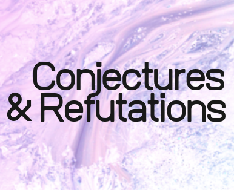

|
I am currently a Postdoctoral Fellow at the SOCRATES Centre at the Institute for Philosophy at Leibniz University Hannover. Previous to that, I was a Postdoctoral Fellow at the Center for Philosophy of Science at the University of Pittsburgh and a Visiting Fellow at the Department of Philosophy, Logic and Scientific Method at the London School of Economics, where I completed my PhD. My research interests lie in epistemology and the philosophy of science, with a special focus on modelling under uncertainty, robustness analysis and climate science. I am also interested in foundational issues in the philosophy of statistics. Curriculum Vitae Contact me here!
|
"The IPCC Uncertainty Framework: What Some Decision Makers Want (and Why They Shouldn’t)". Climatic Change (forthcoming).Abstract In “Combining probability with qualitative degree-of-certainty metrics in assessment,” Helgeson et al. present a mathematical model of the confidence-likelihood relationship in the IPCC uncertainty framework. Their goal is to resolve ambiguities in the framework and clarify the roles of “confidence” and “likelihood” in decision-making. In this paper, I provide a conceptual evaluation of their proposal. I argue that the IPCC cannot implement the model coherently and that adopting it could result in unclear and potentially misleading communication of uncertainty. |
"Climate Models and Robustness Analysis - Part I: Core Concepts and Premises." In Gianfranco Pellegrino & Marcello Di Paola (ed.) Handbook of the Philosophy of Climate Science. Cham: Springer, (2023), (with Roman Frigg). Abstract Robustness analysis (RA) is the prescription to consider a diverse range of evidence and only regard a hypothesis as well-supported if all the evidence agrees on it. In contexts like climate science, the evidence in support of a hypothesis often comes in the form of model results. This leads to model-based RA (MBRA), whose core notion is that a hypothesis ought to be regarded as well-supported on grounds that a sufficiently diverse set of models agrees on the hypothesis. This chapter, which is the first part of a two-part review of MBRA, begins by providing a detailed statement of the general structure of MBRA. This statement will make visible the various parts of MBRA and will structure our discussion. We explicate the core concepts of independence and agreement, and we discuss what they mean in the context of climate modelling. Our statement shows that MBRA is based on three premises, which concern robust properties, common structures, and so-called robust theorems. We analyse what these involve and what problems they raise in the context of climate science. In the next chapter, which is the second part of the review, we analyse how the conclusions of MBRA can be justified. |
"Climate Models and Robustness Analysis - Part II: The Justificatory Challenge." In Gianfranco Pellegrino & Marcello Di Paola (ed.) Handbook of the Philosophy of Climate Science. Cham: Springer, (2023), (with Roman Frigg). Abstract Robustness analysis (RA) is the prescription to consider a diverse range of evidence and only regard a hypothesis as well-supported if all the evidence agrees on it. In contexts like climate science, the evidence in support of a hypothesis often comes from scientific models. This leads to model-based RA (MBRA), whose core notion is that a hypothesis ought to be regarded as well-supported on grounds that a sufficiently diverse set of models agrees on the hypothesis. This chapter, which is the second part of a two-part review of MBRA, addresses the thorny issue of justifying the inferential steps taking us from the premises to the conclusions. We begin by making explicit what exactly the problem is. We then turn to a discussion of two broad families of justificatory strategies, namely top-down and bottom-up justifications. In the latter group we distinguish between the likelihood approach, independence approaches, and the explanatory approach. This discussion leads us to the sober conclusion that multi-model situations raise issues that are not yet fully understood and that the methods and approaches that MBRA has not yet reached a stage of maturity. Important questions remain open, and these will have to be addressed in future research. |
"The Epistemic Value of Independent Lies: False Analogies and Equivocations". Synthese (2021). Abstract I critically assess an argument put forward by Kuorikoski et al. (2010) for the epistemic import of model-based robustness analysis. I show that this argument is not sound since the sort of probabilistic independence on which it relies is unfeasible. By revising the notion of probabilistic independence imposed on the models' results, I introduce a prima-facie more plausible argument. However, despite this prima-facie plausibility, I show that even this new argument is unsound in most if not all cases of model-based robustness analysis. This I do to demonstrate that the epistemic import of model-based robust analysis cannot be satisfactorily defended on the basis of probabilistic independence. |
"Some Conceptual Problems in the IPCC Uncertainty Framework, How They Came About, and Where to Go from Here". Manuscript available on request. Abstract This paper has two related objectives. The first is to offer a thorough diagnosis of some conceptual problems in the IPCC uncertainty framework. I believe that any successful attempt to revise and improve the framework will have to start from a clear understanding of the current conceptual problems, their implications for the IPCC authors’ treatment of uncertainties, and the quality of the information provided in IPCC reports. Accordingly, the first objective of this paper is to contribute to this first step. I begin by showing that there is no interpretation of ‘confidence’ and ‘likelihood’ that is compatible with the IPCC uncertainty guide’s recommendations - and thus with the resulting practice of the IPCC authors in their communication of uncertainty. I argue that the lack of a conceptually valid interpretation of ‘likelihood’ and ‘confidence’ has worrying implications for both the practice of the IPCC authors in their treatment of uncertainties and the quality of the information provided in IPCC reports. Finally, I show that an understanding of the reasons behind the decision to include two uncertainty scales in the IPCC uncertainty framework can give us some interesting insights into the nature of this problem. Its second objective is to critically reflect on what an adequate IPCC uncertainty framework could look like. I critically assess two strikingly different proposals for a new IPCC uncertainty framework (Winsberg, 2018; Bradley et al., 2017) and I argue that in both proposals the interpretation of ‘confidence’ is conceptually problematic. Finally, I offer my own tentative proposal that meets what I take to be two basic desiderata for an adequate uncertainty framework: conceptual clarity and decision relevancy. |
"Robustness Reexamined Unpacking the Limits of Model-Based Robustness Analysis as Explanatory Reasoning". Manuscript available on request. Abstract In scientific inquiry, a “robust” result is often viewed as supporting a hypothesis, but the Bayesian logic behind this requires careful examination. Schupbach’s (2018) explanatory account of robustness analysis (RA) provides valuable insights, particularly for empirically driven cases of RA. However, this paper challenges the claim that this account equally applies to model-based RAs. I argue that applying this account to model-based RAs is significantly more complex than recognized by Schupbach and others and that it fails to apply to a significantly broader range of model-based RAs than previously assumed. |
"Beyond Inductive Risk: Unravelling the Equivocations and Misconceptions Hiding Quantifauxcation". Manuscript available on request. Abstract Debates on the role of values in science, particularly in relation to inductive risk, have remained largely orthogonal to disputes over the legitimate use of probability in inference. This separation is surprising, as both concern the conditions under which scientific reasoning produces reliable and epistemically justified conclusions. In this paper, I argue that although discussions on values have been invaluable in highlighting the role of non-epistemic considerations in scientific practice, they have often overshadowed an equally pressing issue: the uncritical acceptance of probabilism as the default framework for representing uncertainty. This oversight has shaped philosophical debates on inference in ways that obscure important methodological concerns. A more critical engagement with probabilistic reasoning is essential to upholding the epistemic rigor and integrity of scientific reasoning. |
"Conceptualizing Uncertainty: The IPCC, Model Robustness and the Weight of Evidence". PhD Thesis (2021). Abstract The aim of this thesis is to improve our understanding of how to assess and communicate uncertainty in areas of research deeply afflicted by it, the assessment and communication of which are made more fraught still by the studies’ immediate policy implications. The IPCC is my case study throughout the thesis, which consists of three parts. In Part 1, I offer a thorough diagnosis of conceptual problems faced by the IPCC uncertainty framework. The main problem I discuss is the persistent ambiguity surrounding the concepts of ‘confidence’ and ‘likelihood’; I argue that the lack of a conceptually valid interpretation of these concepts compatible with the IPCC uncertainty guide’s recommendations has worrying implications for both the IPCC authors’ treatment of uncertainties and the interpretability of the information provided in the AR5. Finally, I show that an understanding of the reasons behind the IPCC’s decision to include two uncertainty scales can offer insights into the nature of this problem. In Part 2, I review what philosophers have said about model-based robustness analysis. I assess several arguments that have been offered for its epistemic import and relate this discussion to the context of climate model ensembles. I also discuss various measures of independence in the climate literature, and assess the extent to which these measures can help evaluate the epistemic import of model robustness. In Part 3, I explore the notion of the ‘weight of evidence’ typically associated with Keynes. I argue that the Bayesian (or anyone who believes the role of probability in inductive inference is to quantify the degree of belief to assign to a hypothesis given the evidence) is bound to struggle with this notion, and draw some lessons from this fact. Finally, I critically assess some recent proposals for a new IPCC uncertainty framework that significantly depart from the current one. |
| During my time at the LSE I have been a teaching assistant for the following courses:
"The Big Questions: An Introduction to Philosophy" (2017-19, 2021-23) "Einstein for Everyone: From time travel to the edge of the universe" (2019/20) "Genes, Brains and Society" (2021/22) "Historical and Global Perspectives on Philosophy" (2022) "Philosophy of Science" (2023) Before joining LSE I also taught Mathematics (A-level and STEP) at a school in Cambridge and I have been a part-time examiner for A-level mathematics international examinations. I am comfortable teaching introduction to philosophy, philosophy of science, decision theory, formal epistemology, philosophy of statistics, introductory logic and formal methods for philosophers. |
| In 2022, I organized (with Deborah Mayo and Roman Frigg) The Statistics Wars and Their Casualties Workshop. In case you missed it, you can find all the recorded talks and panel discussions here! |
|  During my time at LSE I have been co-organizing the LSE's Conjectures and Refutations seminar series, which brings together philosophers and scientists with a shared interest in the philosophy of science. If this might be for you, check out this website and join the mailing list! |
| “Probabilism Under Scrutiny: Grappling with the Weight of Evidence”, Center for Philosophy of Science, Pittsburgh, April 2024. |
| “Some Conceptual Problems in the IPCC Uncertainty Framework, and Where to Go from Here”, Center for Philosophy of Science, Pittsburgh, November 2023. |
| “The Detrimental Impact of Quantifauxcation on Our Understanding of the Evolution of the Climate”, European Philosophy of Science Association, Belgrade (online), September 2023. |
| "The Ubiquity of Quantifauxcation and Why it Must Stop", 17th International Congress on Logic, Methodology and Philosophy of Science and Technology, Buenos Aires, July 2023. |
| "On Severity, the Weight of Evidence, and the Relationship Between the Two", The statistics Wars and Their Casualties Workshop , LSE, CPNSS (online), December 2022. |
| "Model Robustness: Schupbach’s Explanatory Account of Robustness Analysis to the Rescue?", Sigma Club , LSE (online), March 2022. |
| "Some Conceptual Problems in the IPCC Uncertainty Framework, and How They Came About", Conference on Climate Change and Studies of the Future, A Coruña, October 2021. |
| "What Does the Bayesian Have to Say about Model-Based Robustness Analysis?", Bayesian Epistemology: Perspectives and Challenges, Munich (online), August 2020. |
| "What Does the Bayesian Have to Say about Model-Based Robustness Analysis?", Choice Group, LSE (online), June 2020. |
| "The Epistemic Value of Independent Lies: False Analogies and Equivocations", London Graduate Philosophy Conference, London (Online), June 2020. |
| "On the Relationship between Confidence and Likelihood in the IPCC Uncertainty Framework", European Philosophy of Science Association, Geneva, September 2019. |
| "On the Relationship between Confidence and Likelihood in the IPCC Uncertainty Framework", British Society for the Philosophy of Science, Durham, July 2019. |
|
Before getting into philosophy I studied mathematics at the University of Warwick (with the intention to keep studying it, but I clearly changed my mind at some point). One of my regrets is not to have realised earlier how interesting statistics can really be. |
|